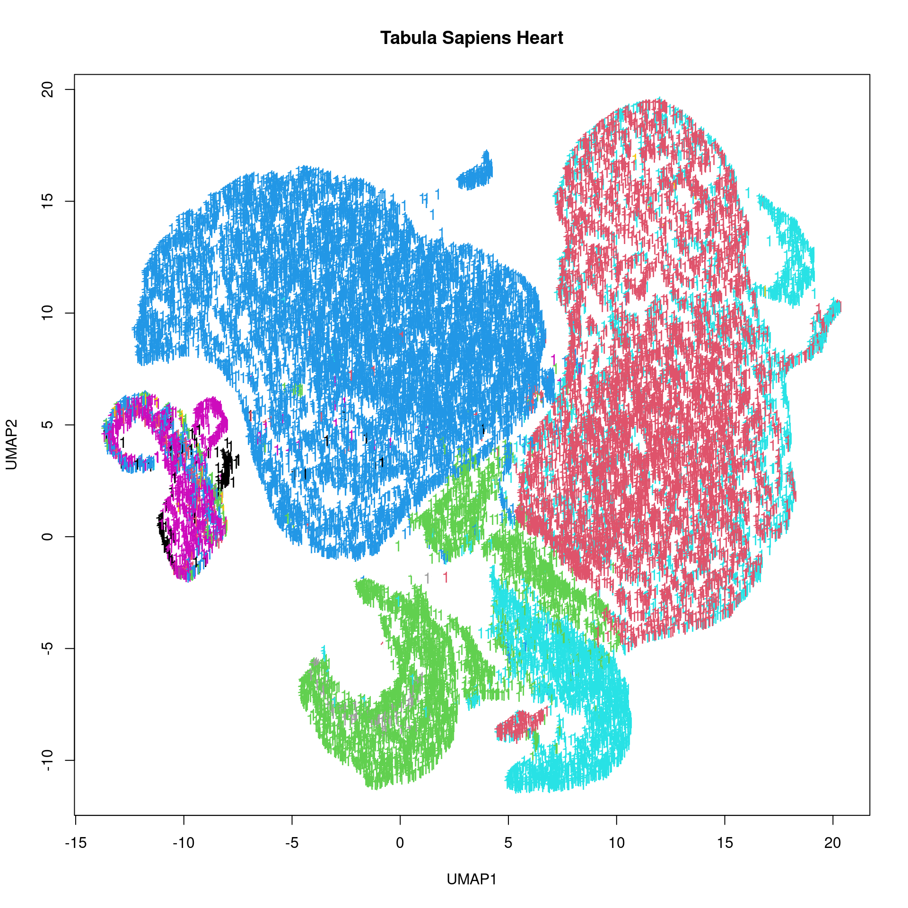

Last updated: 2025-03-05
Checks: 7 0
Knit directory: muse/
This reproducible R Markdown analysis was created with workflowr (version 1.7.1). The Checks tab describes the reproducibility checks that were applied when the results were created. The Past versions tab lists the development history.
Great! Since the R Markdown file has been committed to the Git repository, you know the exact version of the code that produced these results.
Great job! The global environment was empty. Objects defined in the global environment can affect the analysis in your R Markdown file in unknown ways. For reproduciblity it’s best to always run the code in an empty environment.
The command set.seed(20200712) was run prior to running
the code in the R Markdown file. Setting a seed ensures that any results
that rely on randomness, e.g. subsampling or permutations, are
reproducible.
Great job! Recording the operating system, R version, and package versions is critical for reproducibility.
Nice! There were no cached chunks for this analysis, so you can be confident that you successfully produced the results during this run.
Great job! Using relative paths to the files within your workflowr project makes it easier to run your code on other machines.
Great! You are using Git for version control. Tracking code development and connecting the code version to the results is critical for reproducibility.
The results in this page were generated with repository version 413b2a0. See the Past versions tab to see a history of the changes made to the R Markdown and HTML files.
Note that you need to be careful to ensure that all relevant files for
the analysis have been committed to Git prior to generating the results
(you can use wflow_publish or
wflow_git_commit). workflowr only checks the R Markdown
file, but you know if there are other scripts or data files that it
depends on. Below is the status of the Git repository when the results
were generated:
Ignored files:
Ignored: .Rproj.user/
Ignored: data/1M_neurons_filtered_gene_bc_matrices_h5.h5
Ignored: data/293t/
Ignored: data/293t_3t3_filtered_gene_bc_matrices.tar.gz
Ignored: data/293t_filtered_gene_bc_matrices.tar.gz
Ignored: data/5k_Human_Donor1_PBMC_3p_gem-x_5k_Human_Donor1_PBMC_3p_gem-x_count_sample_filtered_feature_bc_matrix.h5
Ignored: data/5k_Human_Donor2_PBMC_3p_gem-x_5k_Human_Donor2_PBMC_3p_gem-x_count_sample_filtered_feature_bc_matrix.h5
Ignored: data/5k_Human_Donor3_PBMC_3p_gem-x_5k_Human_Donor3_PBMC_3p_gem-x_count_sample_filtered_feature_bc_matrix.h5
Ignored: data/5k_Human_Donor4_PBMC_3p_gem-x_5k_Human_Donor4_PBMC_3p_gem-x_count_sample_filtered_feature_bc_matrix.h5
Ignored: data/Parent_SC3v3_Human_Glioblastoma_filtered_feature_bc_matrix.tar.gz
Ignored: data/brain_counts/
Ignored: data/cl.obo
Ignored: data/cl.owl
Ignored: data/jurkat/
Ignored: data/jurkat:293t_50:50_filtered_gene_bc_matrices.tar.gz
Ignored: data/jurkat_293t/
Ignored: data/jurkat_filtered_gene_bc_matrices.tar.gz
Ignored: data/pbmc20k/
Ignored: data/pbmc20k_seurat/
Ignored: data/pbmc3k/
Ignored: data/pbmc4k_filtered_gene_bc_matrices.tar.gz
Ignored: data/pbmc_1k_v3_raw_feature_bc_matrix.h5
Ignored: data/refdata-gex-GRCh38-2020-A.tar.gz
Ignored: data/seurat_1m_neuron.rds
Ignored: data/t_3k_filtered_gene_bc_matrices.tar.gz
Ignored: r_packages_4.4.1/
Untracked files:
Untracked: analysis/bioc_scrnaseq.Rmd
Untracked: data/97516b79-8d08-46a6-b329-5d0a25b0be98.h5ad
Untracked: data/pbmc_1k_v3_filtered_feature_bc_matrix.h5
Note that any generated files, e.g. HTML, png, CSS, etc., are not included in this status report because it is ok for generated content to have uncommitted changes.
These are the previous versions of the repository in which changes were
made to the R Markdown (analysis/hdf5.Rmd) and HTML
(docs/hdf5.html) files. If you’ve configured a remote Git
repository (see ?wflow_git_remote), click on the hyperlinks
in the table below to view the files as they were in that past version.
| File | Version | Author | Date | Message |
|---|---|---|---|---|
| Rmd | 413b2a0 | Dave Tang | 2025-03-05 | Tabula Sapiens h5ad |
| html | 4c0da54 | Dave Tang | 2025-03-01 | Build site. |
| Rmd | f3c325e | Dave Tang | 2025-03-01 | 10x gene expression HDF5 file |
| html | f706b10 | Dave Tang | 2023-07-21 | Build site. |
| Rmd | e5a16af | Dave Tang | 2023-07-21 | HDF5 |
From Wikipedia:
Hierarchical Data Format (HDF) is a set of file formats (HDF4, HDF5) designed to store and organize large amounts of data. Originally developed at the U.S. National Center for Supercomputing Applications, it is supported by The HDF Group, a non-profit corporation whose mission is to ensure continued development of HDF5 technologies and the continued accessibility of data stored in HDF.
In keeping with this goal, the HDF libraries and associated tools are available under a liberal, BSD-like license for general use. HDF is supported by many commercial and non-commercial software platforms and programming languages. The freely available HDF distribution consists of the library, command-line utilities, test suite source, Java interface, and the Java-based HDF Viewer (HDFView).
The current version, HDF5, differs significantly in design and API from the major legacy version HDF4.
Download from Tabula Sapiens:
Tabula Sapiens is a benchmark, first-draft human cell atlas of over 1.1M cells from 28 organs of 24 normal human subjects. This work is the product of the Tabula Sapiens Consortium. Taking the organs from the same individual controls for genetic background, age, environment, and epigenetic effects, and allows detailed analysis and comparison of cell types that are shared between tissues.
ts_heart_url <- "https://datasets.cellxgene.cziscience.com/97516b79-8d08-46a6-b329-5d0a25b0be98.h5ad"
ts_heart_file <- paste0('data/', basename(ts_heart_url))
if(file.exists(ts_heart_file)){
message(paste0(ts_heart_file, " already exists"))
} else {
options(timeout = 1000)
download.file(url = ts_heart_url, destfile = ts_heart_file)
}data/97516b79-8d08-46a6-b329-5d0a25b0be98.h5ad already existsCreat new H5File.
ts_heart_h5 <- H5File$new(filename = ts_heart_file, mode = "r")
ts_heart_h5Class: H5File
Filename: /home/rstudio/muse/data/97516b79-8d08-46a6-b329-5d0a25b0be98.h5ad
Access type: H5F_ACC_RDONLY
Attributes: encoding-type, encoding-version
Listing:
name obj_type dataset.dims dataset.type_class
X H5I_GROUP <NA> <NA>
layers H5I_GROUP <NA> <NA>
obs H5I_GROUP <NA> <NA>
obsm H5I_GROUP <NA> <NA>
obsp H5I_GROUP <NA> <NA>
raw H5I_GROUP <NA> <NA>
uns H5I_GROUP <NA> <NA>
var H5I_GROUP <NA> <NA>
varm H5I_GROUP <NA> <NA>
varp H5I_GROUP <NA> <NA>List datasets.
hdf5r::list.datasets(ts_heart_h5) |>
head()[1] "X/data" "X/indices"
[3] "X/indptr" "layers/decontXcounts/data"
[5] "layers/decontXcounts/indices" "layers/decontXcounts/indptr" UMAP.
ts_heart_umap_h5 <- ts_heart_h5[["obsm/X_umap"]]
ts_heart_umap <- ts_heart_umap_h5[,]
plot(t(ts_heart_umap), pch = '.', xlab = "UMAP1", ylab = "UMAP2", main = "Tabula Sapiens Heart")
Download 1.3 Million Brain Cells from E18 Mice (3.93 GB).
my_url <- 'https://cf.10xgenomics.com/samples/cell-exp/1.3.0/1M_neurons/1M_neurons_filtered_gene_bc_matrices_h5.h5'
my_file <- paste0("data/", basename(my_url))
if(!file.exists(my_file)){
options(timeout = 10000)
download.file(url = my_url, destfile = my_file)
}New H5File object.
gex_feat_mat <- H5File$new(filename = my_file, mode = "r")
gex_feat_matClass: H5File
Filename: /home/rstudio/muse/data/1M_neurons_filtered_gene_bc_matrices_h5.h5
Access type: H5F_ACC_RDONLY
Attributes: TITLE, CLASS, VERSION, FILTERS, PYTABLES_FORMAT_VERSION, filetype, chemistry_description, library_ids, original_gem_groups
Listing:
name obj_type dataset.dims dataset.type_class
mm10 H5I_GROUP <NA> <NA>List datasets.
hdf5r::list.datasets(gex_feat_mat)[1] "mm10/barcodes" "mm10/data" "mm10/gene_names" "mm10/genes"
[5] "mm10/indices" "mm10/indptr" "mm10/shape" Get gene names.
gene_names_h5 <- gex_feat_mat[["mm10/gene_names"]]
gene_names <- gene_names_h5[]
class(gene_names)[1] "character"length(gene_names)[1] 27998head(gene_names)[1] "Xkr4" "Gm1992" "Gm37381" "Rp1" "Rp1" "Sox17" Download ARCHS4 HDF5 data and load using the hdf5r package.
human <- H5File$new(filename = "/data2/archs4/human_gene_v2.5.h5", mode = "r")
humanClass: H5File
Filename: /data2/archs4/human_gene_v2.5.h5
Access type: H5F_ACC_RDONLY
Listing:
name obj_type dataset.dims dataset.type_class
data H5I_GROUP <NA> <NA>
meta H5I_GROUP <NA> <NA>Different groups.
human[["data"]]Class: H5Group
Filename: /data2/archs4/human_gene_v2.5.h5
Group: /data
Listing:
name obj_type dataset.dims dataset.type_class
expression H5I_DATASET 888821 x 67186 H5T_INTEGERhuman[["meta"]]Class: H5Group
Filename: /data2/archs4/human_gene_v2.5.h5
Group: /meta
Listing:
name obj_type dataset.dims dataset.type_class
genes H5I_GROUP <NA> <NA>
info H5I_GROUP <NA> <NA>
samples H5I_GROUP <NA> <NA>Use the names() function to get all names of
objects.
names(human)[1] "data" "meta"The ls() function provides more information.
human$ls() name link.type obj_type num_attrs group.nlinks group.mounted
1 data H5L_TYPE_HARD H5I_GROUP 0 1 0
2 meta H5L_TYPE_HARD H5I_GROUP 0 3 0
dataset.rank dataset.dims dataset.maxdims dataset.type_class
1 NA <NA> <NA> <NA>
2 NA <NA> <NA> <NA>
dataset.space_class committed_type
1 <NA> <NA>
2 <NA> <NA>List functions.
hdf5r::list.attributes(human)character(0)hdf5r::list.datasets(human) [1] "data/expression" "meta/genes/biotype"
[3] "meta/genes/ensembl_gene" "meta/genes/symbol"
[5] "meta/info/author" "meta/info/contact"
[7] "meta/info/creation-date" "meta/info/laboratory"
[9] "meta/info/version" "meta/samples/channel_count"
[11] "meta/samples/characteristics_ch1" "meta/samples/contact_address"
[13] "meta/samples/contact_city" "meta/samples/contact_country"
[15] "meta/samples/contact_institute" "meta/samples/contact_name"
[17] "meta/samples/contact_zip" "meta/samples/data_processing"
[19] "meta/samples/extract_protocol_ch1" "meta/samples/geo_accession"
[21] "meta/samples/instrument_model" "meta/samples/last_update_date"
[23] "meta/samples/library_selection" "meta/samples/library_source"
[25] "meta/samples/library_strategy" "meta/samples/molecule_ch1"
[27] "meta/samples/organism_ch1" "meta/samples/platform_id"
[29] "meta/samples/relation" "meta/samples/sample"
[31] "meta/samples/series_id" "meta/samples/singlecellprobability"
[33] "meta/samples/source_name_ch1" "meta/samples/status"
[35] "meta/samples/submission_date" "meta/samples/taxid_ch1"
[37] "meta/samples/title" "meta/samples/type" hdf5r::list.groups(human)[1] "data" "meta" "meta/genes" "meta/info" "meta/samples"hdf5r::list.objects(human) [1] "data" "data/expression"
[3] "meta" "meta/genes"
[5] "meta/genes/biotype" "meta/genes/ensembl_gene"
[7] "meta/genes/symbol" "meta/info"
[9] "meta/info/author" "meta/info/contact"
[11] "meta/info/creation-date" "meta/info/laboratory"
[13] "meta/info/version" "meta/samples"
[15] "meta/samples/channel_count" "meta/samples/characteristics_ch1"
[17] "meta/samples/contact_address" "meta/samples/contact_city"
[19] "meta/samples/contact_country" "meta/samples/contact_institute"
[21] "meta/samples/contact_name" "meta/samples/contact_zip"
[23] "meta/samples/data_processing" "meta/samples/extract_protocol_ch1"
[25] "meta/samples/geo_accession" "meta/samples/instrument_model"
[27] "meta/samples/last_update_date" "meta/samples/library_selection"
[29] "meta/samples/library_source" "meta/samples/library_strategy"
[31] "meta/samples/molecule_ch1" "meta/samples/organism_ch1"
[33] "meta/samples/platform_id" "meta/samples/relation"
[35] "meta/samples/sample" "meta/samples/series_id"
[37] "meta/samples/singlecellprobability" "meta/samples/source_name_ch1"
[39] "meta/samples/status" "meta/samples/submission_date"
[41] "meta/samples/taxid_ch1" "meta/samples/title"
[43] "meta/samples/type" Function to get data.
wrap <- function(x){
x <- sub("^", "[['", x)
sub("$", "']]", x)
}
get_data <- function(obj, ds, ...){
s <- unlist(strsplit(x = ds, split = "/"))
txt <- paste0(obj, paste(sapply(s, wrap), collapse = "", sep = ""), ...)
eval(parse(text = txt))
}Check out some of the data.
get_data('human', 'meta/samples/title', '[1:5]')[1] "OCI-LY1_48hrs_mRNAseq_3x_siNT_R1" "OCI-LY1_48hrs_mRNAseq_3x_siNT_R2"
[3] "OCI-LY1_48hrs_mRNAseq_3x_siNT_R3" "OCI-LY1_48hrs_mRNAseq_3x_siBCL6_R1"
[5] "OCI-LY1_48hrs_mRNAseq_3x_siBCL6_R2"get_data('human', 'meta/samples/sample', '[1:5]')[1] "GSM1000981" "GSM1000982" "GSM1000983" "GSM1000984" "GSM1000985"get_data('human', 'meta/samples/geo_accession', '[1:5]')[1] "GSM1000981" "GSM1000982" "GSM1000983" "GSM1000984" "GSM1000985"get_data('human', 'meta/samples/series_id', '[1:5]')[1] "GSE29282" "GSE29282" "GSE29282" "GSE29282" "GSE29282"get_data('human', 'meta/samples/characteristics_ch1', '[1:5]')[1] "treatment: siNT,cell line: OCI-LY1"
[2] "treatment: siNT,cell line: OCI-LY1"
[3] "treatment: siNT,cell line: OCI-LY1"
[4] "treatment: siBCL6,cell line: OCI-LY1"
[5] "treatment: siBCL6,cell line: OCI-LY1"get_data('human', 'meta/samples/extract_protocol_ch1', '[1]')[1] "ChIP-seq libraries were prepared using the Illumina ChIP-seq Library preparation Kit following the manufactureâ\u0080\u0099s instructions with minor modifications. Briefly 10ng of purified ChIP DNA was end repaired by conversion of overhangs to phosphorylated blunt ends. Aâ\u0080\u0099 bases were added to the 3â\u0080\u0099ends of the DNA fragments and Illumina adapters (1:30 dilution) were ligated to the ends of ChIP fragments. After adapter ligation DNA was separated by electrophoresis and size selected by isolating a gel band of 250±25bp. This fragment range corresponds to a ChIP fragment range of about 158±25bp. Size selected fragments were PCR amplified for 15cycles using Illumina genomic DNA primers 1.1 and 1.2 with the following program (30s at 98oC, 15cycles of 10 at 98oC, 30s at 65oC,30s at 72oC and 5min extension at 75oC). Libraries were quantified and validated using Agilent Technologies 2100 Bioanalyser for size, concentration and purity. Q-PCR was repeated to confirm retention of relative enrichment. RNAseq: Three ug of total RNA was isolated from OCI-Ly1 cells transfected using Nucleofector 96-well Shuttle system (Lonza) with siBCL6 (HSS100968) or siNT (46-2001) (Stealth RNAi, Invitrogen) at 24hrs and 48hrs after nucleofection. RNAeasy Plus Kit (Qiagen) that included a gDNA elimination step was used for RNA isolation. RNA concentration and purity were determined using Nanodrop (Thermo Scientific) and integrity was verified using Agilent 2100 Bioanalyzer (Agilent Technologies, Santa Clara, CA). Libraries were generated using mRNA-seq sample prep kit by Illumina. Briefly, mRNA was selected by two rounds of purification using magnetic polydT beads and then fragmented. First strand synthesis was performed using random oligos and SupersciptIII (Invitrogen). After second strand synthesis a 200bp paired-end library was prepared following the Illumina paired-end library preparation protocol."get_data('human', 'meta/samples/source_name_ch1', '[1:5]')[1] "Human DLBCL cel line" "Human DLBCL cel line" "Human DLBCL cel line"
[4] "Human DLBCL cel line" "Human DLBCL cel line"Gene symbols.
human[['meta']][['genes']][['symbol']]Class: H5D
Dataset: /meta/genes/symbol
Filename: /data2/archs4/human_gene_v2.5.h5
Access type: H5F_ACC_RDONLY
Datatype: H5T_STRING {
STRSIZE H5T_VARIABLE;
STRPAD H5T_STR_NULLTERM;
CSET H5T_CSET_UTF8;
CTYPE H5T_C_S1;
}
Space: Type=Simple Dims=67186 Maxdims=67186
Chunk: 2100Store gene symbols.
my_idx <- 1:human[['meta']][['genes']][['symbol']]$maxdims
my_gene_sym <- human[['meta']][['genes']][['symbol']][my_idx]
head(my_gene_sym)[1] "TSPAN6" "TNMD" "DPM1" "SCYL3" "C1orf112" "FGR" Check out some sources.
unique(get_data('human', 'meta/samples/source_name_ch1', '[1:100]')) [1] "Human DLBCL cel line"
[2] "placenta"
[3] "HeLa"
[4] "RNA-seq H1-hESC"
[5] "RNA-seq H1-hESC-48hr-Activin"
[6] "Primary Human Umbilical Vein Endothelial Cells"
[7] "Myeloid Leukemia"
[8] "HT29 treated with 0 μM of 5-Aza"
[9] "HT29 treated with 5 μM of 5-Aza"
[10] "HT29 treated with 10 μM of 5-Aza"
[11] "corneal endothelial cells"
[12] "fibroblast"
[13] "iPS"
[14] "Human Stem Derived Motor Neurons GFP high"
[15] "Human Stem Derived Motor Neurons no GFP"
[16] "Immortalized primary fibroblasts"
[17] "NTera2/D1 cells"
[18] "gastric adenocarcinoma cells"
[19] "CNE1-MOCK_RNA-seq"
[20] "CNE1-BART1_RNA-seq"
[21] "CNE1-BART3_RNA-seq"
[22] "CNE1-BART7_RNA-seq"
[23] "iPSC"
[24] "NPC"
[25] "cells in culture"
[26] "mammary tumor xenograft"
[27] "Bone Marrow"
[28] "Foreskin fibroblasts"
[29] "Human Fib X Human Fib Homokaryons"
[30] "Fertile mature sperm" Store all sources.
my_idx <- 1:human[['meta']][['samples']][['source_name_ch1']]$maxdims
my_source <- human[['meta']][['samples']][['source_name_ch1']][my_idx]
head(my_source)[1] "Human DLBCL cel line" "Human DLBCL cel line" "Human DLBCL cel line"
[4] "Human DLBCL cel line" "Human DLBCL cel line" "Human DLBCL cel line"Search.
length(my_source[grepl("immune", my_source, ignore.case = TRUE)])[1] 234length(my_source[grepl("dendritic", my_source, ignore.case = TRUE)])[1] 1799Genes are columns and rows are samples.
exp_data <- human[['data']][['expression']]
exp_dataClass: H5D
Dataset: /data/expression
Filename: /data2/archs4/human_gene_v2.5.h5
Access type: H5F_ACC_RDONLY
Datatype: H5T_STD_U32LE
Space: Type=Simple Dims=888821 x 67186 Maxdims=Inf x 67186
Chunk: 1 x 2000Sum across first ten samples.
apply(exp_data[1:10, ], 1, sum) [1] 70714473 58300222 65226925 72034813 66846773 59968330 468037 519638
[9] 599381 621721TP53 position.
tp53_idx <- match("TP53", my_gene_sym)
tp53_idx[1] 8139Close.
human$close_all()